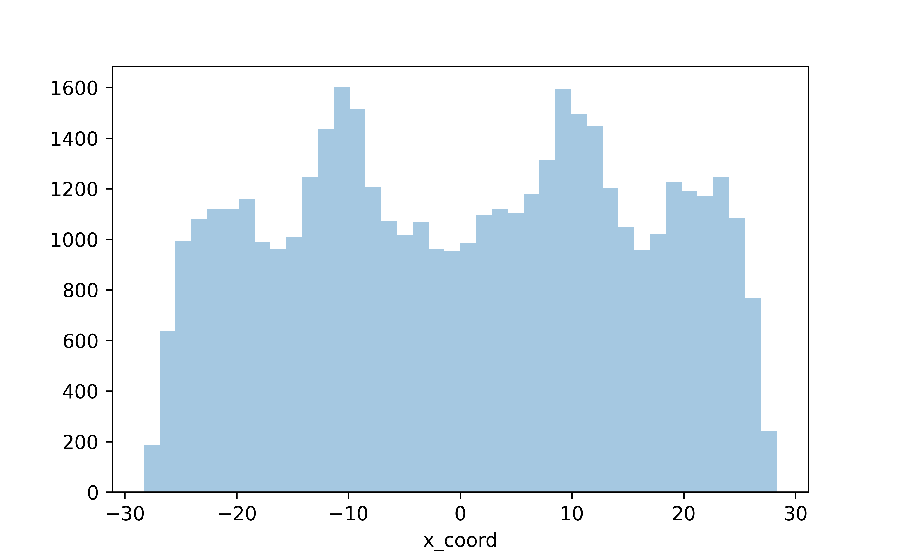
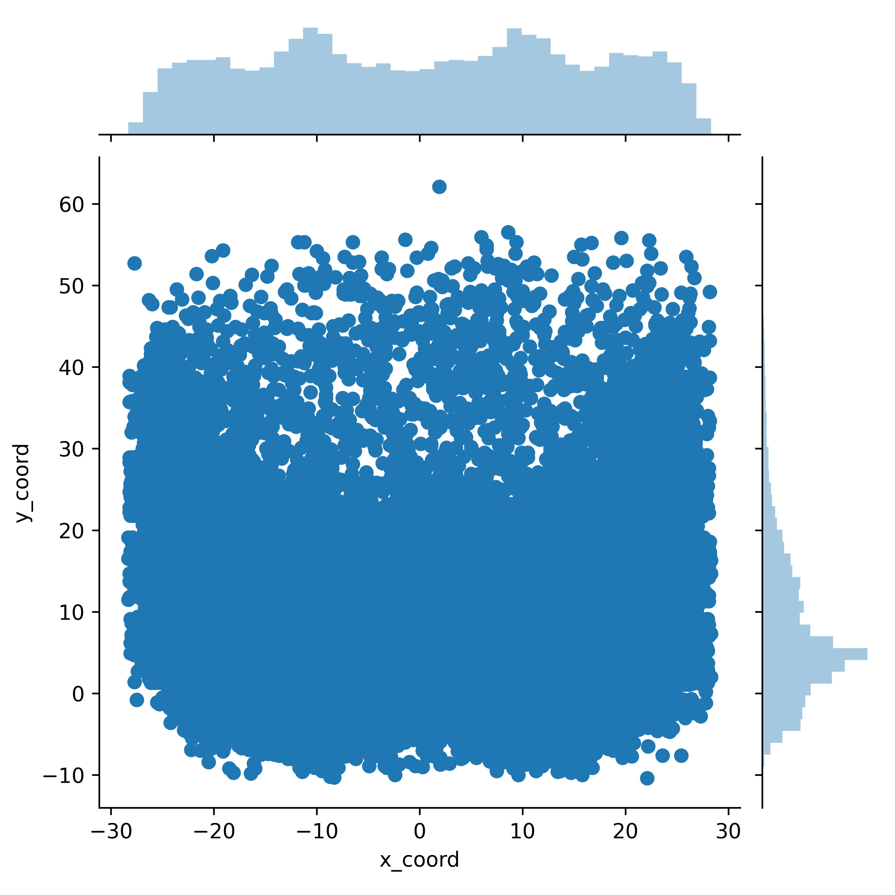
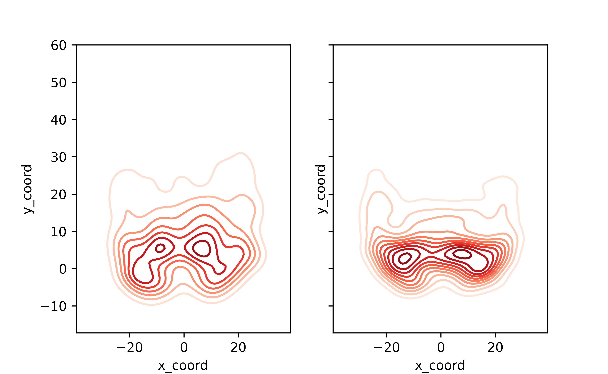
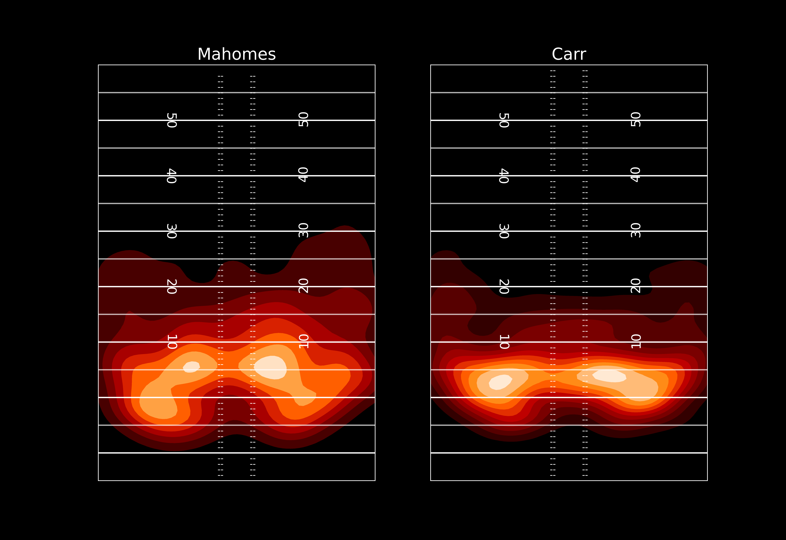

Table of Contents
Visualizing NFL Pass Location
So this is a post all about how my life got flipped-turned upside down…
Kidding, but kind of. About a year ago I became very interested in NFL analytics, and managed to stumble across the incredible work of Sarah Mallepalle, Ron Yurko, Konstantinos Pelechrinis, and Sam Ventura. Their paper (https://arxiv.org/abs/1906.03339) unveiled the creation of a scraper which could take static Next Gen Stats passing charts and translate them into x and y coordinate data. This tool was as impressive as it was interesting, and so it should be no surprise that Sarah (the lead author on the paper) was scooped up to work as an analyst for the Baltimore Ravens, terminating the public code for this work. Thankfully, Ron Yurko was happy to revive her github when I reached out. I have had a ton of fun exploring this dataset, and even adapted the code a bit to scrape routes and carries as well.
That said, sometimes location data can be a bit overwhelming so I thought I’d do a quick walkthrough of a few things you can do with it. Consider this post Part One, where I’ll walk through some simple two-dimensional visualizations. In later posts I’ll do my best to go over the expected completion surfaces Sarah et al. debuted in the paper, and other ways to visualize the data.
Set-up
First we need to import the libraries we’ll be using
import pandas as pd
import seaborn as sns
import numpy as np
import matplotlib.pyplot as pltNext we’ll read in our data from the repo I maintain
df = pd.read_csv('https://raw.githubusercontent.com/ArrowheadAnalytics/next-gen-scrapy-2.0/master/pass_and_game_data.csv', low_memory=False)
#There's an additional index row we don't need, so I am getting rid of it here
df = df.iloc[0:,1:]Data Exploration
#Drop the games that weren't able to be scraped
df.dropna(inplace=True)
#Explore the data a bit
df.head(3)
game_id name ... home_score away_score
0 2017091004 Carson Palmer ... 35 23
1 2017091004 Carson Palmer ... 35 23
2 2017091004 Carson Palmer ... 35 23
[3 rows x 14 columns]
#Get a summary of the numerical data in our dataframe
df.describe()
game_id x_coord ... home_score away_score
count 4.383900e+04 43839.000000 ... 43839.000000 43839.000000
mean 2.018206e+09 0.401437 ... 23.654600 22.306827
std 8.202842e+05 15.229154 ... 10.318057 10.243724
min 2.017091e+09 -28.300000 ... 0.000000 0.000000
25% 2.017122e+09 -12.300000 ... 17.000000 16.000000
50% 2.018112e+09 0.900000 ... 24.000000 23.000000
75% 2.019101e+09 12.900000 ... 31.000000 28.000000
max 2.019123e+09 28.300000 ... 57.000000 59.000000
[8 rows x 6 columns]Looks like we’ve got almost 43k passes, from 2017-2019, ranging from -28.3 to 28.3 in the x coordinate and -10.4 to 62.1 in the y coordinate. We know a field is only 53 and 1/3 yards wide, so tthere are some passes being identified that are technically out of bounds.
One common thing to do with new data is to explore the distributions of the numerical variables we are interested in. This is typically done with histograms.
#Let's visualize the distribution of the coordinates
fig = sns.distplot(df.x_coord, kde=False)
plt.show()
Nothing fancy here but we can already see some trends in where players pass the ball. Let’s look at the y direction
#Now the x coordinate
fig = sns.distplot(df.y_coord, kde=False)
plt.show()
So we’ve plotted both the horizontal (x) and vertical (y) field components, but nothing too interesting here still. What if we wanted to visualize these distributions as 2-dimensional?
We have a few different ways to go about this. One, a simple jointplot.
fig = sns.jointplot(x='x_coord', y='y_coord', data=df)
plt.show()
This is neat! We’ve now visualized the data by both the x and y coordinate, and we can see the distributions for both on the side of the graph
But, with just one small tweak we can make this even more clear.
fig = sns.jointplot(x='x_coord', y='y_coord', data=df, kind='hex', color='red')
plt.show()
What we’ve done here is bin each of the passes into a hexagons by where they were thrown on the field. The darker hexagons here represent areas of the field where a higher density of passes were targeted.
If this kind of discrete binning isn’t your thing, how about a smoother 2-dimensional kernel density estimate? Again, with just a very small tweak to the above code we can plot a different way of visualizing the location of these passes
fig = sns.jointplot(x='x_coord', y='y_coord', data=df, kind='kde', cmap='Reds', color='red')
plt.show()
Now, what if we want to directly compare two distributions? Looking at the entire dataset has been interesting, but how does someone like Derek Carr differ in his target locations compared to someone like Patrick Mahomes?
#prepare our two plots - no reason to separate out our axes here as we want to compare these two players on an equal scale so we set sharex and sharey to true
fig, ax =plt.subplots(1,2, sharex=True, sharey=True)
#First, we'll partition the data to the player we are looking for
qb_name = 'Mahomes' #I'm being intentional vague here and not listing the full player name, because many player names listed on Next Gen Stats are different than you're likely accustomed to. So, I've found this method easire to ensure I get the player data
qb = df.loc[(df['name'].str.contains(qb_name))]
#Assign this plot to the first (0-index) axis. Not going to use the univariate distributions on the axes for these plots as they don't work well as subplots
sns.kdeplot(qb.x_coord, qb.y_coord, ax=ax[0], cmap='Reds')
#Let's get player 2
qb_name = 'Carr'
qb = df.loc[(df['name'].str.contains(qb_name))]
#Second plot
sns.kdeplot(qb.x_coord, qb.y_coord, ax=ax[1], cmap='Reds')
plt.show()
This isn’ too bad! With just a few lines of code we can see that Carr’s passes are more dense around the line of scrimmage, while Mahomes spreads the ball around more.
Let’s spice these plots up a bit
#Layering two plotting styles here to get a big, clean, but dark background look
plt.style.use('seaborn-poster')
plt.style.use('dark_background')
#Set up our subplots
fig, (ax1, ax2) =plt.subplots(1,2)
qb_name = 'Mahomes'
qb = df.loc[(df['name'].str.contains(qb_name))]
#What we've added here is shading for the densities, but leaving the lowest density area unshaded.
#I've also added the *n_level* parameter, which allows us to choose how many levels we want to have in our contour. The higher the number here, the smoother the plot will look.
sns.kdeplot(qb.x_coord, qb.y_coord, ax=ax1, cmap='gist_heat', shade=True, shade_lowest=False, n_levels=10)
#Set title, remove ticks and labels
ax1.set_title(qb_name)
ax1.set_xlabel('')
ax1.set_xticks([])
ax1.set_yticks([])
ax1.set_ylabel('')
#Remove any part of the plot that is out of bounds
ax1.set_xlim(-53.3333/2, 53.3333/2)
ax1.set_ylim(-15,60)
#This makes our scales (x and y) equal (1 pixel in the x direction is the same 'distance' in coordinates as 1 pixel in the y direction)
#Plot all of the field markings (line of scrimmage, hash marks, etc.)
for j in range(-15,60-1,1):
ax1.annotate('--', (-3.1,j-0.5),
ha='center',fontsize =10)
ax1.annotate('--', (3.1,j-0.5),
ha='center',fontsize =10)
for i in range(-10,60,5):
ax1.axhline(i,c='w',ls='-',alpha=0.7, lw=1.5)
for i in range(-10,60,10):
ax1.axhline(i,c='w',ls='-',alpha=1, lw=1.5)
for i in range(10,60-1,10):
ax1.annotate(str(i), (-12.88,i-1.15),
ha='center',fontsize =15,
rotation=270)
ax1.annotate(str(i), (12.88,i-0.65),
ha='center',fontsize =15,
rotation=90)
#Now we just repeat for player 2.
qb_name = 'Carr'
qb = df.loc[(df['name'].str.contains(qb_name))]
#Second plot
sns.kdeplot(qb.x_coord, qb.y_coord, ax=ax2, cmap='gist_heat', shade=True, shade_lowest=False, n_levels=10)
ax2.set_title(qb_name)
ax2.set_xlabel('')
ax2.set_ylabel('')
ax2.set_xticks([])
ax2.set_yticks([])
ax2.set_xlim(-53.3333/2, 53.3333/2)
ax2.set_ylim(-15,60)
for j in range(-15,60,1):
ax2.annotate('--', (-3.1,j-0.5),
ha='center',fontsize =10)
ax2.annotate('--', (3.1,j-0.5),
ha='center',fontsize =10)
for i in range(-10,60,5):
ax2.axhline(i,c='w',ls='-',alpha=0.7, lw=1.5)
for i in range(-10,60,10):
ax2.axhline(i,c='w',ls='-',alpha=1, lw=1.5)
for i in range(10,60-1,10):
ax2.annotate(str(i), (-12.88,i-1.15),
ha='center',fontsize =15,
rotation=270)
ax2.annotate(str(i), (12.88,i-0.65),
ha='center',fontsize =15,
rotation=90)
plt.show()
Now the nice thing about these seaborn plots is they do all the heavy lifting for us - but, they don’t let us see the underlying numbers. We can’t see at the coordinate (-20, 10) exactly what density of passes each player has.
That concludes this post. In my next post I’ll walk through performing a kernel density estimate ourselves, which lets us overlay QB densities and do some other fun things. Huge thanks to Sarah Mallepalle and her coauthors for publishing this awesome data and scraper, thanks to Ronald Yurko, Samuel Ventura, and Maksim Horowitz for the creation of the nflscrapR tool which spurred my and so many other’s interest in NFL analytics, and to Ben Baldwin and Sebastian Carl for continuing to advance the public work in this space.